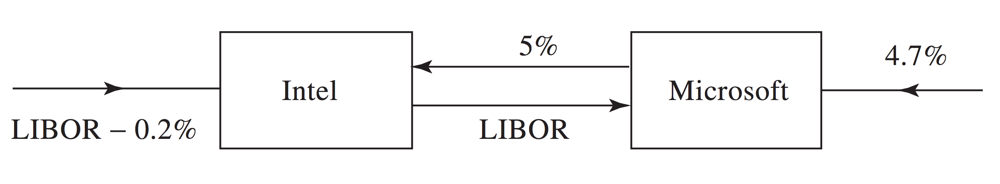
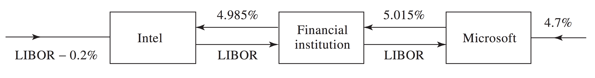
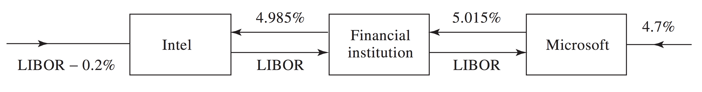
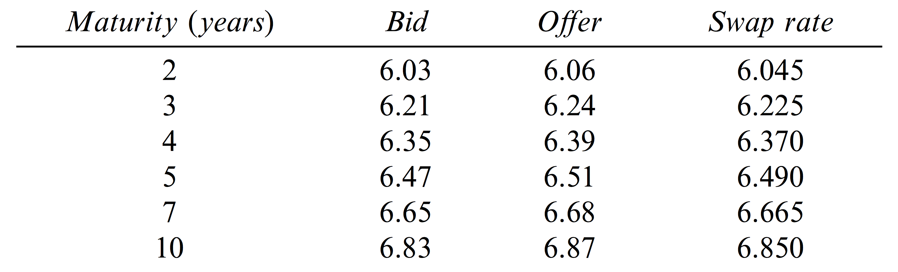
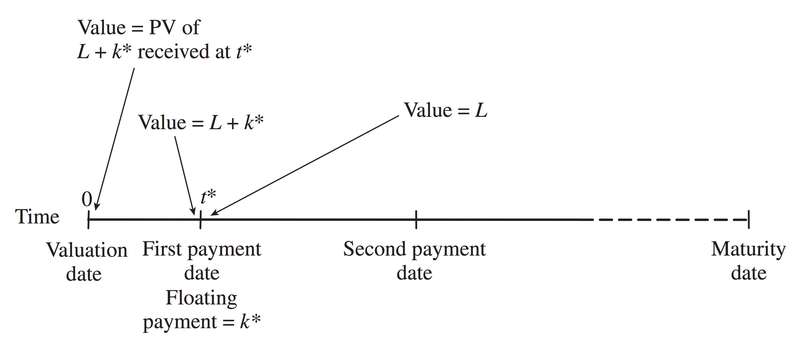
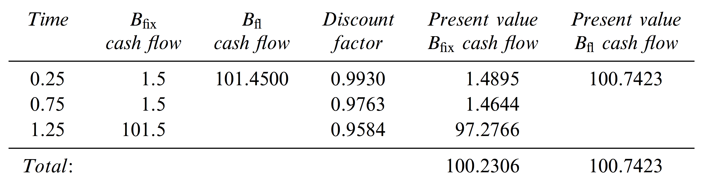
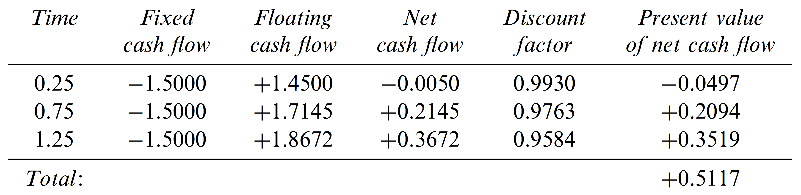
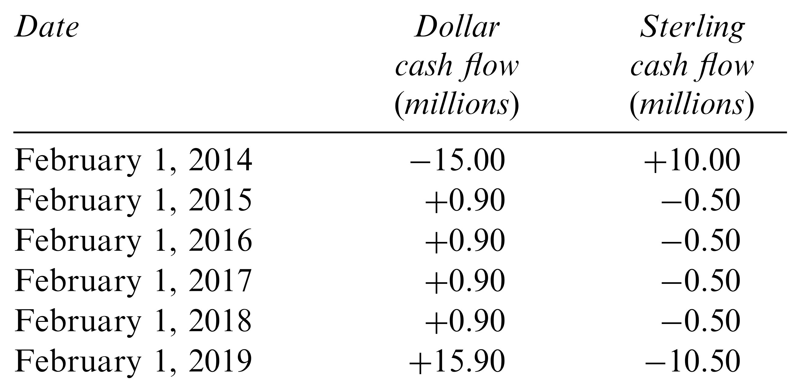

Swaps
A swap is an agreement to exchange cash flows in the future.
- It is an over-the-counter agreement.
- Dates, cash flows and timing of payments are variables of the contract.
- The cash flows are typically determined by an interest rate or exchange rate.
Forward/Futures as Swap
A forward or futures contract can be viewed as a simple swap:
- Suppose you buy an E-mini contract today for \(\smash{F = 2000}\).
- You are agreeing to a swap in which you pay \(\smash{50F}\) and receive \(\smash{50P}\), where \(\smash{P}\) is the settlement price of the contract.
Swaps are typically more complex, involving a stream of swapped cash flows.
Interest Rate Swap
Basic components of an interest rate swap:
- Notional principal.
- Fixed interest rate.
- Floating interest rate.
- Predetermined time period for cash flows.
One party pays fixed interest on the principal during the predetermined period and the other pays floating interest.
LIBOR Swap
Typically LIBOR is the floating rate used in interest rate swaps.
- A LIBOR swap is referred to as a ``Libor-for-fixed” swap.
LIBOR Swap Example
Suppose Microsoft and Intel engage in a 3-year swap on Mar 5, 2014.
- The notional principal is $100 million.
- Payments made semi-annually.
- Microsoft pays 5% fixed (per annum, semi-annual compounding).
- Intel pays 6-month LIBOR (per annum, semi-annual compounding).
LIBOR Swap Diagram

LIBOR Swap Cash Flows

LIBOR Swap Cash Flows with Notional

LIBOR Swap Example
- Microsoft pays $2.5 million to Intel on Sep 5, 2014 and each subsequent 6 months until Mar 5, 2017.
- On Sep 5, 2014, Intel pays Mar 5, 2014 LIBOR (4.2%): $2.1 million.
- Each subsequent 6 months, Intel pays the LIBOR rate from the date 6 months prior to the payment.
- The first exchange of payments is known at initiation of the swap.
LIBOR Swap Cash Flows
Typically only one party in the swap makes a payment of the difference between the two cash flows.
- In the previous example, Microsoft would pay \$0.4 million on Sep 5, 2015 and $0.1 million on Mar 5, 2015.
- Note that the principal is not exchanged at the end of the contract, which is why it is called notional.
- If the notional were traded, the swap could be characterized as an exchange of floating- and fixed-rate bonds.
Transforming a Liability
A swap can transform a floating-rate loan into a fixed-rate loan and vice versa.
- If Microsoft has a floating-rate loan on $100 million at LIBOR plus
10 basis points (1 basis point = 0.01%), the swap transforms it into
a loan of 5.1% fixed.
- Microsoft pays LIBOR plus 0.1% to outside lenders.
- It receives LIBOR from swap.
- It pays 5% to Intel.
- If Intel has a fixed-rate loan on $100 million at 5.2%, the swap
transforms it into a loan of LIBOR plus 20 basis points:
- Intel pays 5.2% to outside lenders.
- It receives 5% from swap.
- It pays LIBOR to Microsoft.
Transforming a Liability

Transforming a Asset
A swap can transform a floating-rate asset into a fixed-rate asset and vice versa.
- If Microsoft holds $100 million in bonds paying 4.7% per annum,
the swap transforms the bonds into asset paying LIBOR minus 30 basis
points:
- Microsoft receives 4.7% from bonds.
- It receives LIBOR from swap.
- It pays 5% to Intel.
- If Intel holds $100 million in bonds paying LIBOR minus 20 basis
points, the swap transforms the bonds into an asset paying 4.8%:
- Intel receives LIBOR minus 0.2% from bonds.
- It receives 5% from swap.
- It pays LIBOR to Intel.
Transforming a Liability
Financial Intermediaries
Typically the parties to a swap connect via a banking intermediary.
- The bank earns a commission of 3% or 4% for providing the service and assuming default risk.
- The individual swap parties don’t know who is on the other side of the transaction.
- In many cases, market makers enter into swaps with one party without having an exact offsetting position.
- Market makers will post bid and offer (fixed) rates - the average of bid and offer is the swap rate.
Financial Intermediaries Diagram
 

Market Maker Quotes
An Important Fact
Recall the basic bond pricing formula:
\[\begin{align}
P & = \frac{c\times F}{r} \left(1 - \frac{1}{(1+r)^T}\right) +
\frac{F}{(1+r)^T}.
\end{align}\]
- \(\smash{c}\) is the coupon rate, expressed in terms of the compounding period.
- \(\smash{r}\) is the discount rate.
- Note that when \(\smash{c=r}\), \(\smash{P=F}\).
- This is because the income stream from the bond is equal (in percentage terms) to the rate at which you discount.
- What if \(\smash{c>r}\) or \(\smash{c<r}\)?
Swap Value: Floating Side
The floating side of a swap is a bond that pays LIBOR.
- The bond is also discounted at LIBOR.
- This is a case where the coupon rate equals the discount rate.
- After each interest payment, the bond is equal to the face, or notional principal, \(\smash{L}\).
- Immediately prior to the interest payment, \(\smash{k^*}\), which is known at the beginning of the period, the bond is worth \(\smash{L+k^*}\).
If the payment is made at time \(\smash{t^*}\), we can discount back to the present using the continuously compounded risk-free, \(\smash{r^*}\):
\[\begin{align} B_{fl} & = (L+k^*) e^{-r^* t^*}. \end{align}\]
Swap Value Diagram
Swap Value: Fixed Side
The fixed side of a swap is a fixed-rate bond.
The present value of the bond can be computed in the usual way, using spot rates:
\[\begin{align} B_{fix} & = c e^{-r_1t_1} + c e^{-r_2t_2} + \ldots + (c+L) e^{-r_nt_n}. \end{align}\]
- \(\smash{c}\) is the fixed payment and \(\smash{L}\) is the notional principal.
- \(\smash{n}\) is the number of payment periods and \(\smash{r_i, i=1,\ldots,n}\) are the spot rates.
Swap Value
The resulting swap value is the difference in value of the fixed and floating bonds.
For the party holding the long position in floating:
\[\begin{align} V_{swap} & = B_{fl} - B_{fix}. \end{align}\]
For the party holding the long position in fixed:
\[\begin{align} V_{swap} & = B_{fix} - B_{fl}. \end{align}\]
Swap Value Example
Some time ago you went long on the floating side of a swap, receiving 6-month LIBOR on $100 million principal and paying 3% per annum (semi-annual compounding).
- The swap has 1.25 years remaining.
- Continuously compounded 3-, 9- and 15-month LIBOR rates are 2.8%, 3.2% and 3.4%.
- 6-month LIBOR (compounded semi-annually) at last payment date was 2.9%.
Swap Value Example
The fixed-side bond value (in millions of dollars) is:
\[\begin{align}
B_{fix} & = 1.5 e^{-0.028\times 0.25} + 1.5 e^{-0.032\times
0.75} + 101.5 e^{-0.034\times 1.25} = 100.2306.
\end{align}\]
The floating-side bond value (in millions of dollars) is:
\[\begin{align}
B_{fl} & = 101.45 e^{-0.028\times 0.25} = 100.7423.
\end{align}\]
The swap value (in millions of dollars) is:
\[\begin{align}
V_{swap} & = B_{fl} - B_{fix} = 100.7423 - 100.2306 = 0.5117.
\end{align}\]
Swap Value Table
Swap Value: FRA Portfolio
Each swap payment can be considered an individual FRA.
- In the Intel/Microsoft example, the exchange on Mar 5, 2015 is an FRA where 5% is traded for 6-month LIBOR, determined on Sep5, 2014, etc.
- Since the future LIBOR rates are unknown, each FRA is valued using the forward rates implied by the LIBOR zero curve.
- Hence, the swap can be valued as follows:
- Compute forward rates using the LIBOR zero curve.
- Compute cash flows assuming future LIBOR rates are equal to the forward rates.
- Discount the cash flows using the LIBOR zero curve.
Swap Value Example: FRA Portfolio
Continuing with the previous example:
- The LIBOR rate for the first cash receipt (at 3 months) is already determined at 2.9% per annum (semi-annual compounding).
The forward rate (continuous compounding) for the period between 3 months and 9 months is
\[\begin{align} \frac{0.032 \times 0.75 + 0.028 \times 0.25}{0.5} & = 0.034. \end{align}\]
With semi-annual compounding (using EAR/APR relationship):
\[\begin{align} 2(e^{0.034/2} - 1) & = 0.034291. \end{align}\]
Swap Value Example: FRA Portfolio
The forward rate for the period between 9 months and 15 months is
\[\begin{align} \frac{0.034 \times 1.25 + 0.032 \times 0.75}{0.5} & = 0.037. \end{align}\]
With semi-annual compounding (using EAR/APR relationship):
\[\begin{align} 2(e^{0.037/2} - 1) & = 0.037344. \end{align}\]
Swap Value Example: FRA Portfolio
The swap cash flows are (in millions of dollars):
\[\begin{split}\begin{align}
0.5 \times 0.029 \times 100 - 1.5 & = 1.45 - 1.5 = -0.05 \\
0.5 \times 0.034291 \times 100 - 1.5 & = 1.7145 - 1.5 = 0.21455 \\
0.5 \times 0.037344 \times 100 - 1.5 & = 1.867 - 1.5 = 0.3672.
\end{align}\end{split}\]
The present value is:
\[\begin{align}
V_{swap} & = -0.05 e^{-0.028 \times 0.25} + 0.21455 e^{-0.032 \times
0.75} + 0.3672 e^{-0.034 \times 1.25} = 0.5117.
\end{align}\]
Swap Value Example: FRA Table
Currency Swaps
In a fixed-for-fixed currency swap two parties exchange principal and fixed interest payments on two different currencies.
- Typically the principal is exchanged at initiation, where the principal values are roughly equal, given the exchange rate.
- The principal values are exchanged again at the end, but may be quite different (due to exchange rate fluctuations).
Currency Swap Example
Suppose IBM and BP enter into a 5-year currency swap on Feb 1, 2014.
- IBM pays 5% fixed in sterling and receives 6% fixed in dollars.
- Principal amounts are 15 million USD and 10 million GBP and interest payments are once a year.
Currency Swap Example

Currency Swap Example
Currency Swap: Transforming Liabilities and Assets
Suppose IBM can issue USD bonds, but not GBP.
- The swap effectively transforms 15 million USD in debt to 10 million GBP in debt for IBM.
- Alternatively, suppose IBM has an opportunity to invest 10
million GBP at 5% interest in the UK for 5 years, but feels the
dollar will strengthen.
- The swap effectively transforms the GBP investment into a USD investment.
Currency Swap Valuation: Bonds
Let \(\smash{V_{swap}}\) be the USD value of a swap where dollars are received and foreign currency paid:
\[\begin{align}
V_{swap} & = B_D - S_0 B_F.
\end{align}\]
- \(\smash{B_F}\) is the foreign currency bond value (denominated in units of the foreign currency).
- \(\smash{B_D}\) is the USD bond value (denominated in USD).
- \(\smash{S_0}\) is the spot exchange rate (as USD per unit of foreign currency).
The value of the swap where foreign currency is received and USD paid is the opposite:
\[\begin{align}
V_{swap} & = S_0 B_F - B_D.
\end{align}\]
Currency Swap Valuation Example: Bonds
You currently hold a swap in which you receive 5% per annum on Yen and pay 8% per annum on USD.
- The swap has 3 years remaining.
- Continuous compounded discount rates are 4% per annum in Japan and 9% per annum in the U.S.
- Principal values are 10 million USD and 1,200 million JPY.
- \(\smash{S_0}\) = 1/110 USD/JPY.
Currency Swap Valuation Example: Bonds
The present value of JPY cash flows (in millions of JPY) is:
\[\begin{align}
60 e^{-0.04 \times 1} + 60 e^{-0.04 \times 2} + 1260 e^{-0.04 \times
3} = 1230.55.
\end{align}\]
The present value of USD cash flows (in millions of USD) is:
\[\begin{align}
0.8 e^{-0.09 \times 1} + 0.8 e^{-0.09 \times 2} + 10.8 e^{-0.09 \times
3} = 9.6439.
\end{align}\]
The value of the swap (in millions of USD) is:
\[\begin{align}
\frac{1230.55}{110} - 9.6439 & = 1.5430.
\end{align}\]
Currency Swap Valuation Table: Bonds

Currency Swap Valuation: Forward Portfolio
Each currency swap cash flow exchange is a single forward contract on foreign exchange.
Recall the forward exchange rate is:
\[\begin{align} F_0 & = S_0 e^{(r-r_f)T}. \end{align}\]
- The currency forwards are valued by assuming that the forward exchange rates are realized.
Currency Swap Valuation Example
Continuing with the previous example:
The JPY cash flows, in USD are:
\[\begin{split}\begin{align} \frac{60}{110} e^{(0.09-0.04)\times 1} & = 0.57342 \\ \frac{60}{110} e^{(0.09-0.04)\times 2} & = 0.60282 \\ \frac{1260}{110} e^{(0.09-0.04)\times 3} & = 13.30828. \end{align}\end{split}\]
The present value of cash flows is:
\[\begin{align} (0.57342 - 0.8) e^{-0.09 \times 1} + (0.60282 - 0.8) e^{-0.09 \times 2} + (13.30828 - 10.8) e^{-0.09 \times 3} = 1.5430. \end{align}\]
Currency Swap Valuation Table: Forward Portfolio

Other Currency Swaps
Other common currency swaps include:
- Fixed-for-floating.
- This can be regarded as portfolio of a fixed-for-fixed currency swap and a fixed-for-floating interest rate swap.
- Floating-for-floating.
- This can be regarded as portfolio of a fixed-for-fixed currency swap and two fixed-for-floating interest rate swaps.
Other Swaps
- Many variations of interest swaps exists with differing rates, payment periods, principals, etc.
- Credit default swaps (CDS): annual premium is paid (spread) in exchange for a cash payment if a company defaults.
- Equity swaps: returns on equity index swapped for LIBOR.
- Commodity swaps: series of forward commodity contracts.
- Volatility swaps: predetermined volatility swapped with realized (historical) vol.
- Countless others: financial engineering at its finest.